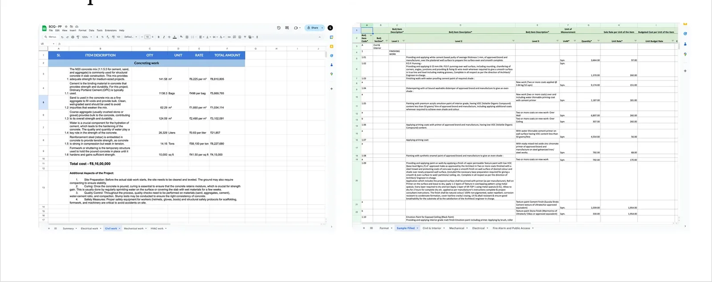
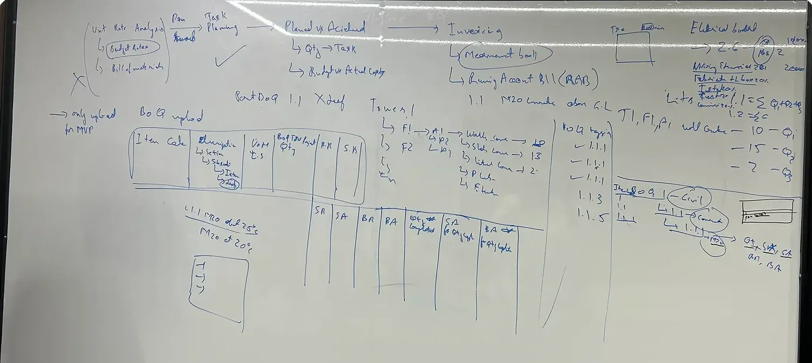
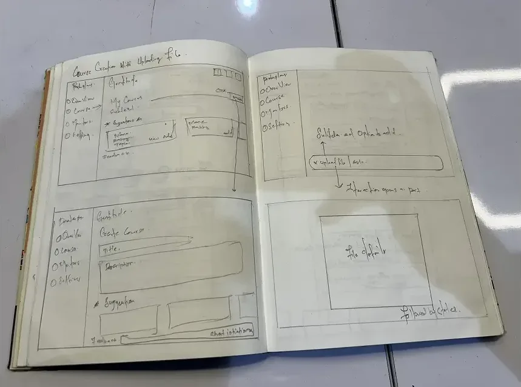
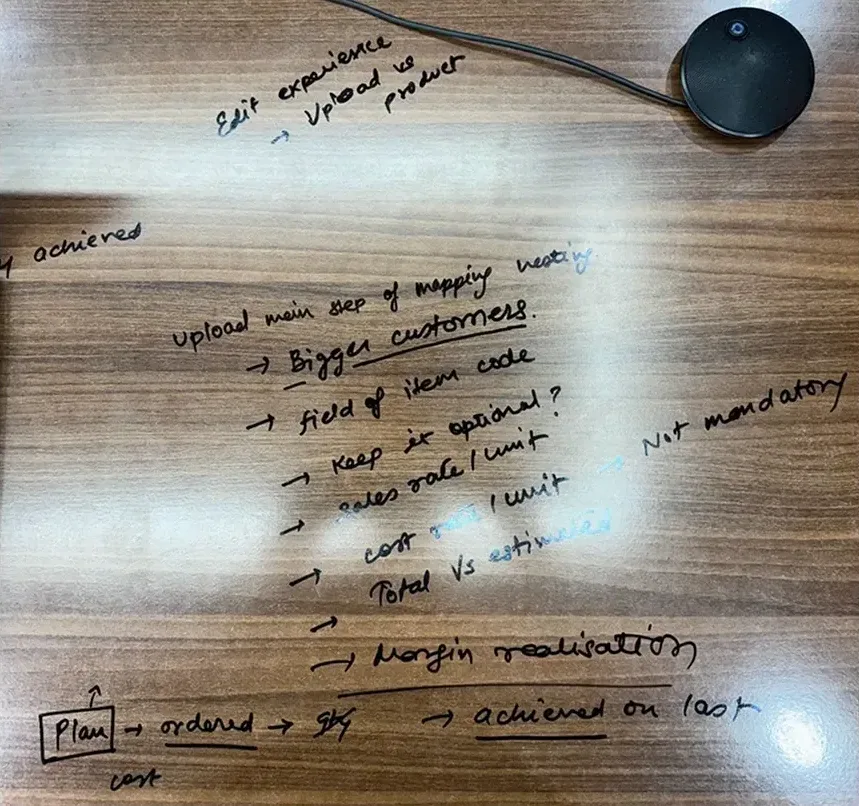
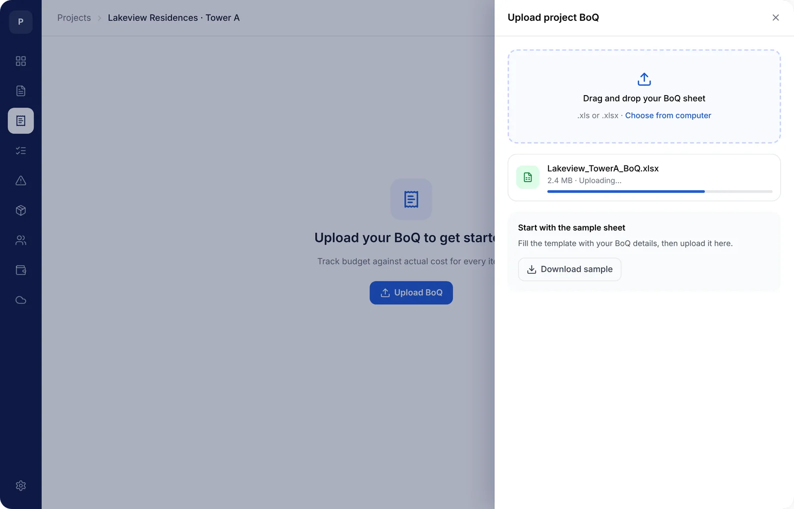
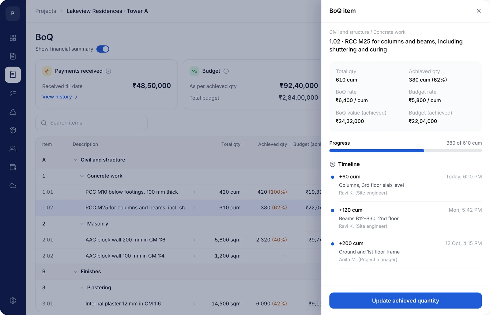
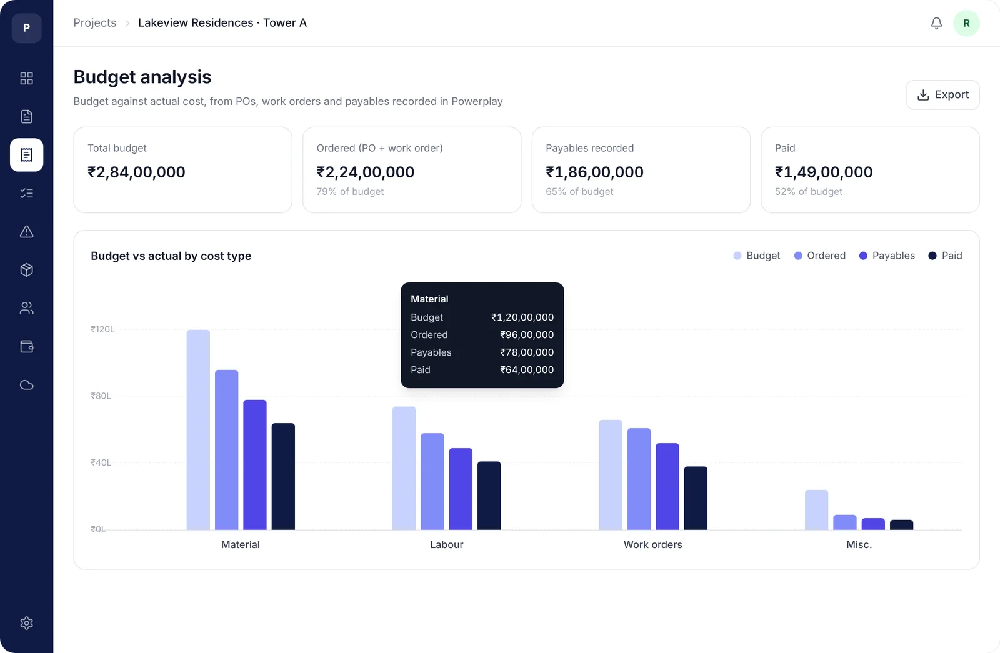

Powerplay · Web feature · 1 month
Bill of Quantities: cost against budget
Teams couldn’t compare what they spent with what they had budgeted. I designed a Bill of Quantities feature, from upload to budget analysis, in two sprints.
2 sprints
from research to tested design
4 needs
found in users’ own BoQ sheets
5 people
1 designer, 1 PM and 3 engineers
- Role
- Research, analysis, usability testing, product design
- Team
- 1 designer, 1 PM, 3 engineers
- Timeline
- 1 month, 2 sprints
- Focus
- Mid-market and enterprise customers
Screens are recreated from my designs with made-up data.

The problem
Spend and budget lived apart
A Bill of Quantities (BoQ) lists the materials, labour and work a project needs, with quantities. Contractors and suppliers use it to estimate cost and price their work.
Users, mostly mid-market companies, couldn’t easily compare actual cost with the budget. That led to mismatches and overruns.
Sprint 1
Start from how users already work
- Their sheets
- I gathered real BoQ sheets: nested or flat, the words they use for line items, how they track them.
- Other tools
- I reviewed similar BoQ features for what works and the gaps we could fill.
- Business goals
- I checked the direction with the business before drawing screens.
- First review
- I rebuilt a user’s sheet as a mock-up and showed it to the users who had asked for BoQ.




What users needed
Four needs
- 1 · Live comparison
- Planned estimate next to actual spend, always up to date.
- 2 · Tasks linked
- Tasks connected to BoQ items, so cost tracking is accurate.
- 3 · Cost by type
- Material, labour and work orders kept apart, to plan resources.
- 4 · Progress over time
- One place to follow progress and cost changes through the project.
Decisions
What went into version 1
- Budget first
- The screen centres on budget against planned cost.
- Two prices
- Each item keeps the sale price from the client’s BoQ and the cost price, so margin can be checked against actual cost.
- Quantity done
- Typed in directly, not worked out from task progress. Trade-off: simpler to ship, but people must keep it up to date.
- One graph
- Ordered, payables and paid, split by material, labour, work order and other.
Sprint 2
Refine, test and hand off
- Feedback
- Folded in what users and stakeholders said about the first UI.
- Testing
- Tested ease of use and navigation with a smaller group of users.
- Edge cases
- Found the cases the first design missed, and solved them with engineering.
- Handoff
- Docs, user flows and guidelines for build, then a final check with stakeholders.
Final design
From upload to budget analysis


